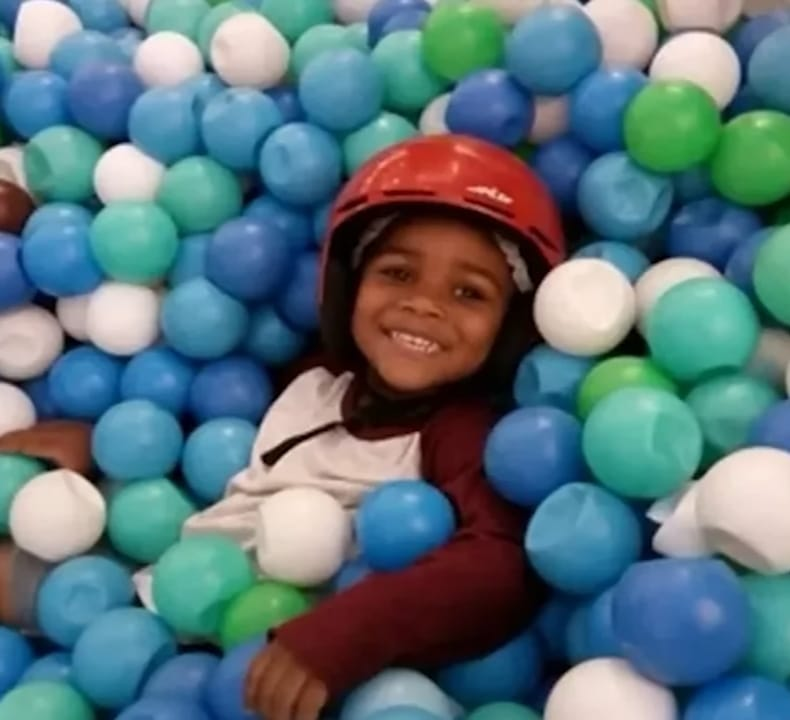
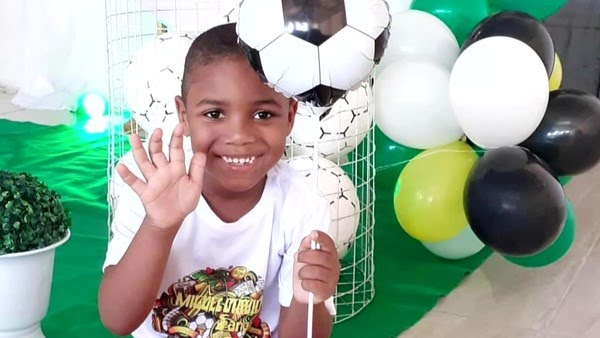

O que aconteceu
Em junho de 2020, Miguel Otávio Santana da Silva, de 5 anos, caiu do 9º andar de um prédio de luxo no Recife. Ele estava sob responsabilidade da empregadora de sua mãe, que havia deixado o menino sozinho no elevador. O caso teve enorme repercussão nacional e levantou debates sobre trabalho doméstico, desigualdade e racismo.
Repercussão
O episódio gerou protestos e grande cobertura da mídia. Movimentos sociais apontaram o caso como exemplo de racismo estrutural e descaso com a vida de uma criança negra. A investigação levou a processo judicial contra a mulher que deixou Miguel no elevador.
Por que é importante
O caso trouxe à tona discussões sobre a falta de proteção às crianças, condições do trabalho doméstico no Brasil e a desigualdade social. Também reacendeu debates sobre como o sistema de justiça trata casos que envolvem empregadores e trabalhadores domésticos.